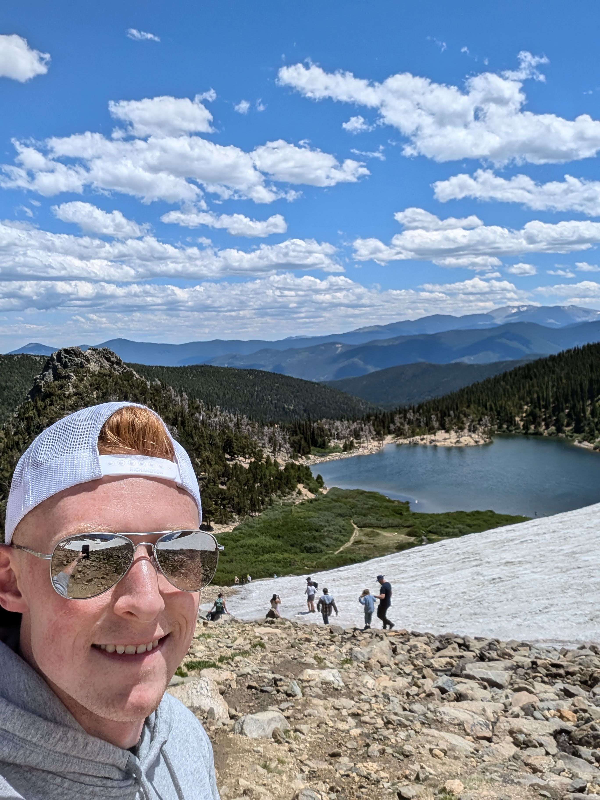

About Me
I've heard since I was young that it's important to follow the prophet, but it's only been fairly recently that I've started to really appreciate the importance the their words.
So I decided to build this website as a way to remember the invitations, advice, and promised blessings we've received from our living prophet! I plan on going back to previous prophets as well, and the current plan is to primarily use their words from the General Conferences during the time they served as President of the Church of Jesus Christ of Latter-day Saints.
I hope it is valuable to you, and that you do your best to follow the prophet! I know you will be blessed for doing so.
